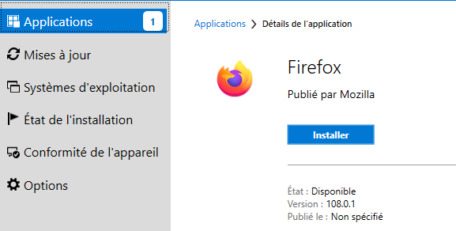
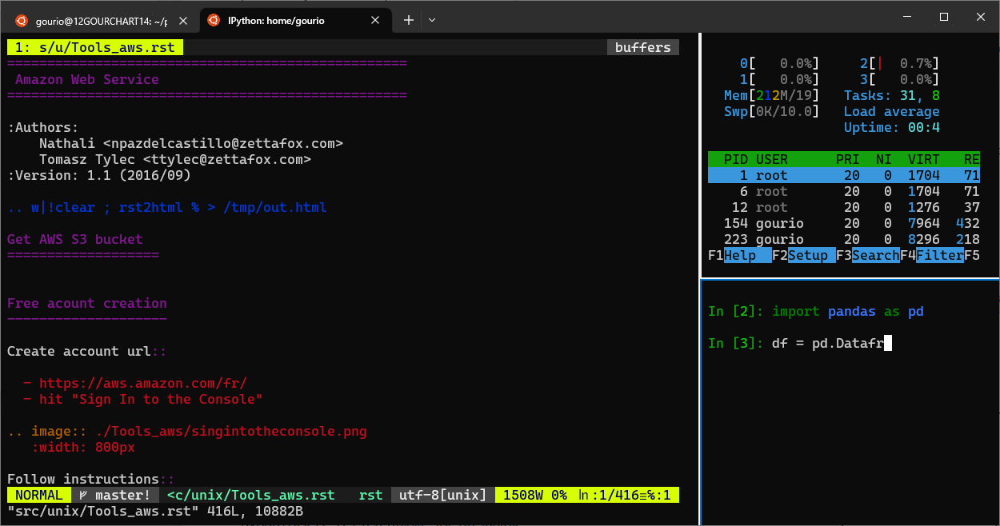

WSL Setup#
We use (Windows Subsystem for Linux) WSL2 to provide a Linux on top of Windows.
Install Software#
On windows “Mazars Centre Logiciel” filter “Data Services” and install in this order:
WSL (then reboot windows)
Linux pinguin
Ubuntu 22.04
Vxsrv
Install WSL
{kind=link}
Linux pinguin
{kind=link}
Install VcXsrv
X Window System or X11 provides the basic framework for a GUI environment: drawing and moving windows on the display device and interacting with a mouse and keyboard used in Unix-like operating systems e.g. GnuLinux: Ubuntu.
VcXsrv is a Visual C++ 2012 compiled version of X11, so we can use it from Windows.
{kind=link}
Install Ubuntu 22.04
{kind=link}
{kind=link}
Eventually you can also install Firefox (optionnal)
{kind=link}
Create your linux user#
Very first Ubuntu terminal run will provide a screen to create your linux user:
Important
use your lowercase firstname as login e.g. luis
use your SSH private key password as password (provided with your
your.mazars.email.zipSSH keys)
Run Ubuntu Terminal and create your user:
$ user name:
$ password:
user caotrido has been created
$
Install Windows Terminal#
{kind=link}
The windows terminal is an alternative to classic linux console or terminator. Developped by Microsoft, it offers a reliable/flexible way to work with WSL.
Installation
1) Download Windows Terminal software from github. You can also get it from
here
2) Launch Windows Powershell
3) In powershell, write the following command:
Add-AppxPackage -Path
Next, the easiest method is to drag and drop the .msixbundle file (the one downloaded in step 1) into the powersell window. So then the path is automatically adjusted.
Note
If the installation failed, you might need to install VClib package. To do so, just
download the sofware here
and apply the same procedure as with windows terminal msixbundle
Usefull tricks
1) Disable the bell
In parameters page:
Click on a profile in the left-hand menu.
Click on the “Advanced” tab.
Find the “Bell notification style” section at the bottom.
Untick “audible”.
Click the save button and rejoice.
2) Disable animations
In parameters :
Click on the appearance tab
Disable animations
3) Ctrl + V shortcut
In parameters :
Click on actions tab
disable/suppress Ctrl + V shortcut (conflict with vim Visual mode)
WSL Toolbox#
Limit WSL CPU/Memory consumption
A good way to restraint WSL memory allocation is to create a .wslconfig file.
This file must be created in the root of the windows user folder (C:\Users\<username> that can be accessed by typing %UserProfile% in the address bar of Windows Explorer)
and contains among other information about :
The global memory allocated (default: ~80% of windows memory)
Swap memory (default: ~25%)
The number of core dedicated to the running distribution
For instance, a good configuration for data services’ Laptop is:
[wsl2]
memory=20GB
processors=4
swap=6GB
Deal with WSL issues
Microsoft PowerShell is a powerfull tool to adress WSL issues. It offers usefull commands to handle linux overconsumption such as :
# Get Vmmem process information
Get-rocess vmmem
# List running wsl distributions
wsl -l --running
# Shutdown a VM session
wsl -t <the_name_of_the_distribution>
# Shutdows Vmmem process
wsl --shutdown
Allow Ubuntu to send GUI windows to Windows#
To use the Linux GUI application we need to send the GUI from le Ubuntu terminal to the running service VcXsrv Windows server.
To do that we need to:
Upgrade your Ubuntu-22.04 from wsl version 1 to 2
Please go to
Windows Powershelland run:PS C:\Users\hiya.banerjee> wsl -l -v NAME STATE VERSION * Ubuntu-22.04 Running 1 PS C:\Users\hiya.banerjee> wsl --set-version Ubuntu-22.04 2 PS C:\Users\hiya.banerjee> upgrading Ubuntu, this can take some time ... PS C:\Users\hiya.banerjee>
Take a break this can take up to 20 minutes
Check that your Ubuntu is now WSL version 2:
PS C:\Users\hiya.banerjee> wsl -l -v NAME STATE VERSION * Ubuntu-22.04 Running 2 PS C:\Users\hiya.banerjee>
Inform throught the bash var
DISPLAYthe IP of the windows host.
Copy the line export DISPLAY=... to your ~/.bashrc:
hiya@12BANEHIYAT470:~$ vim ~/.bashrc
hiya@12BANEHIYAT470:~$ grep DISPLAY ~/.bashrc
export DISPLAY=$(cd /mnt/c && route.exe print | grep 0.0.0.0 | head -1 | awk '{print $4}'):0.0
hiya@12BANEHIYAT470:~$
Source ~/.bashrc to make it take immadiate effect:
hiya@12BANEHIYAT470:~$ source .bashrc
hiya@12BANEHIYAT470:~$ echo $DISPLAY
172.16.1.20:0.0 # in your case the IP could be different
hiya@12BANEHIYAT470:~$
Now if you run a GUI Linux application, it should render on Windows. Our aim is to have a better terminal than the one provided by default for our daily work.
So let’s run terminator:
hiya@12BANEHIYAT470:~$ terminator
hiya@12BANEHIYAT470:~$